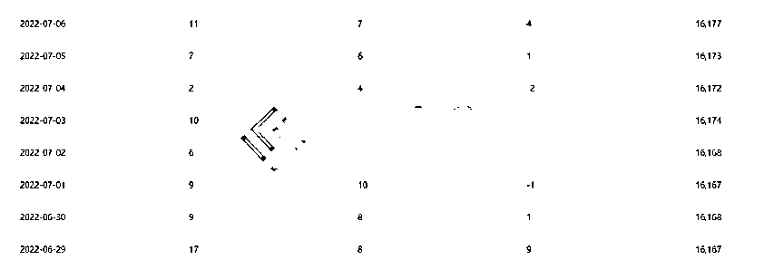
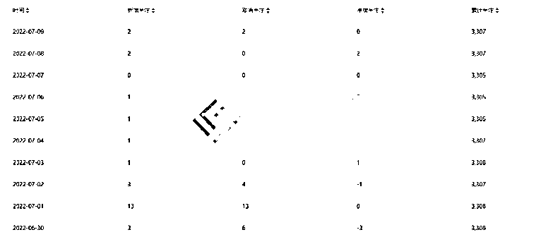
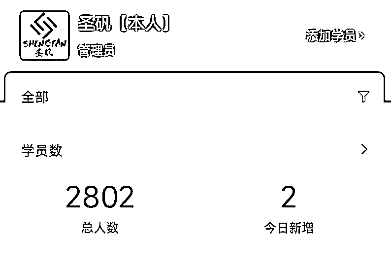
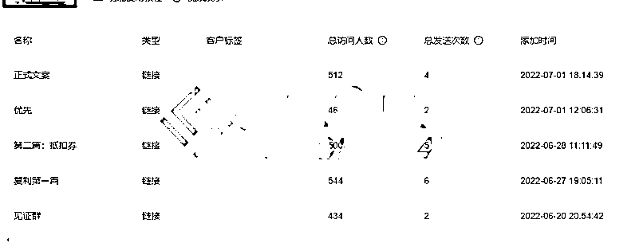
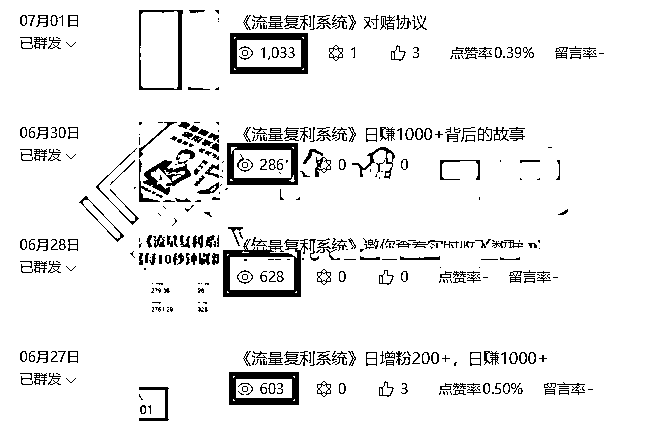
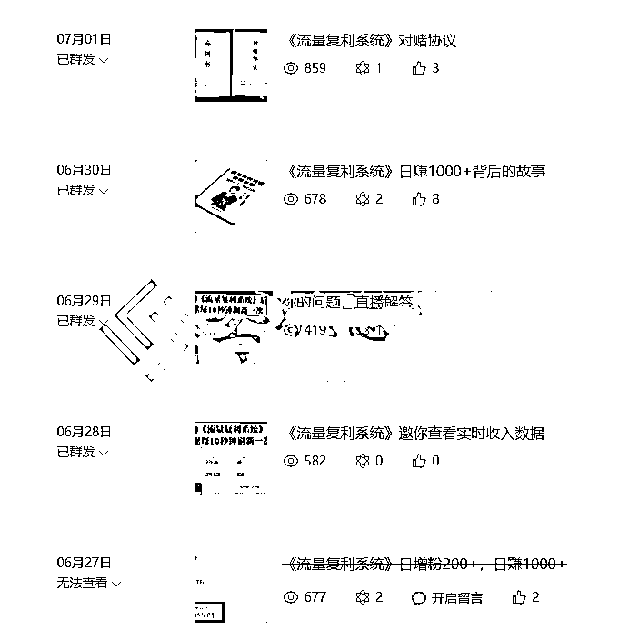
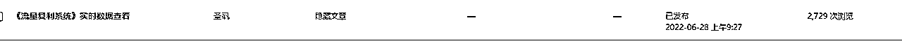
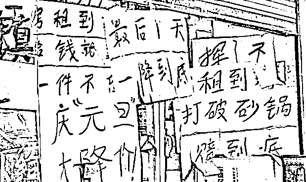

来源：https://yq9pu32e9v.feishu.cn/docx/YebDdo1UvoFFQUxyIuucM6lLnTc
2022 年的这个（6月底，7月初）时候，我当时在策划一件事，就是怎么把当时手里的一个产品卖出去，用了 3 天的时间策划了一个为期 7 天的发售方案，最终实现 2 天收款 54 万。
时隔一年，在进行资料整理的时候翻到了当时的记录，顺便写一个详细的复盘报告。
当时我把数据记录到了自己的网站里，图片都被网站自动加了水印了，为了避免引流嫌疑，所以我把水印打码，尽量不影响参考数据。
本篇内容发售的产品是知识付费类的项目课程，这个项目也早就停止培训了，本篇文章主要分享发售策划流程。
复盘内容比较多，方便阅读，我做了个目录
当时我启动了 4 个信息传播渠道，分别是订阅号，服务号，朋友圈，企业微信群发，下面分别是各渠道数据


微信好友的数据当时没有记录下来，不过 5 个微信加起来大概 1.5W 流量（算上重复的流量），微信好友数量最终影响的是文章阅读量，通过下面的文章阅读量也可以知道具体的数据。



这里的数据看起来有一些奇怪，为什么服务号的粉丝量那么少，阅读量却那么高，原因是当时朋友圈发的所有文章全部都是服务号的文章，而不是订阅号的。
忘了第一篇文章是什么时候被删的了，反正肯定没有影响正常的发售

飞书文章中做表格后这个展示出来的好像不太好看，只能将就着看了
主要看公众号的内容框架，朋友圈，企业微信，微信群，视频号都是围绕公众号文章这条主线做的分支。
| 预热期 | 第一天 | 第二天 | 第三天 | 第四天 | 第五天 | 6-13 | 14 之后 | |
|---|---|---|---|---|---|---|---|---|
| 目的 | 尽可能让更多用户知道你要搞一个事情，但是又不知道搞什么 | 释放结果，搞的这个事情最终的结果是怎样的，底部留钩子（实时看收益情况），引导看第二天的内容 | 释放实时看数据的地址，并且告诉用户要收人，定价三万多，但是有 50 个 20000 的优惠券，想要的需要花 1000 块钱买 | 让信息舆论发酵一天 | 因为第二天，第三天的反馈很好，所以做一下筛选，讲这个项目并不是那么容易，把头脑发热的拒之门外，另外告知第五天是正式发售 | 正式发售，讲价格，讲权益，讲名额等等等 | 收钱 | 结束 |
| 预热期 | 第一天 | 第二天 | 第三天 | 第四天 | 第五天 | 第 6-13 天 | 第 14 天后 | |
|---|---|---|---|---|---|---|---|---|
| 公众号 | 各渠道数据同步，朋友圈轰炸，半小时轮发一次。 | 标题：《流量复利系统》日增粉 200+，日赚 1000+ | 标题：《实时查看收益，亲眼见证流量收入数据》出售 1000 元抵 2W 优惠券，透露最终锚定价格，优惠券名额有限 | 停一天，让子弹飞一会，让舆论发酵一天 | 标题：《流量复利系统》日赚 1000+背后的故事 | 标题：《流量复利系统》对赌协议 | 无 | 宣告发售结束 |
| 朋友圈 | 内容：1。项目数据 2。场景渲染 3。文章轮发 | 同第一天，评论区增加查看数据入口 | 同第二天 | 内容：1。项目数据 2。场景渲染 3。文章轮发 | 内容：1。项目数据 | 内容：1。项目数据 | ||
| 微信群 | 转发文章，发数据 | 发数据 | 同第二天 | 转发文章，发数据 | 转发文章，发数据，发合同，协议照片，交付表等 | 转发文章，发数据，发合同，协议照片，交付表等 | ||
| 企业微信 | 群发第一篇文案，给回复用户打标签 | 群发文案（只群发给打了第一篇关键词的用户） | 回复基础问题 | 群发文章，所有用户都发 | 群发给购买优惠券的客户 | 无 | ||
| 视频号直播 | 不直播 | 开一会直播，不讲具体内容，释放钩子，邀请预约第五天直播 | 开一会直播，不讲具体内容，释放钩子，邀请预约第五天直播 | 开一会直播，不讲具体内容，释放钩子，邀请预约第五天直播 | 直播讲解 | 持续直播，讲解项目 |
第一篇：《流量复利系统》日增粉 200+，日赚 1000+
目的：用高数据吸引用户的视角，让用户关注到这件事（这个数据是没有造假的，当时我们工作室做的数据比这个还要夸张，但是怕太过夸张，别人不信，还是缩小了一些数据），文章底部引导加企业微信，告知用户第二天的内容是实时看数据，这个诱饵相当有吸引力，衔接的文章（第一篇文章引导用户点阅读原文，阅读原文跳转到这个文章，这个文章内容是告知用户实时查看数据的地址以及优惠券名额信息）阅读量有两千七

第二篇：《流量复利系统》邀你查看实时收入数据
目的：建立信任，试探市场。用实时查看数据的方式让用户随时查看数据，视觉冲击感比较强。透露最终价格为 3X980，释放一个买 1000 抵扣 20000 的抵扣券，在查看数据的展示屏幕上放抵扣券券倒数名额，增加紧迫感。
数据：2 天收到 17 个付款
第三篇：《流量复利系统》日赚 1000+背后的故事
目的：因为第二天，第三天的反馈很好，所以做一下筛选，讲这个项目并不是那么容易，把头脑发热的拒之门外，劝退一些用户，另外告知第五天是正式发售
数据：抵扣券退款 2 人，购买人数从 17 人升到了 35 人（这是从第二天到第四天的所有付款）
第四篇标题：《流量复利系统》对赌协议
目的：成交
朋友圈主要是围绕公众号文章内容制作发布的，就是昨天公众号发的啥，今天就在朋友圈里重复发，并且再带一些数据，预告等等等。
朋友圈主要引导预约第五天的直播，告知下一篇文章的发布时间和一些信息。
微信群只是把文章群发了一遍
群发，承接公众号引导流量，设计好自动回复话术。
流程看完了，接下来要分享的是这套流程是用了哪些方法
什么叫多米诺效应？
在上面视频的开头，推动最开始那块最小的骨牌，带动后面比他大一点的骨牌，这样一块一块的倒下去，最终能压倒移动摩天大楼，这里面包含了：连环，叠加，节点 三个元素，在后面的做局理念里会分享如何利用这一原理。
回归到上面的案例，我一共写了 4 篇文章，其实就是 4 块多米诺骨牌，第一块骨牌倒下去，把第二块骨牌也带动了，第一篇文章底部留的钩子就是链接第二篇文章的，依此类推，这四篇文章是有一条线连在一起的。
在你的大脑里想象一个画面，啊，不用想了，我直接画出来吧
这条主线就是公众号文章，其他的分支全部都是为主线做赋能的。
4 篇文章，环环相扣，每一环都比前面一环带来的威力要大，这个威力是指植入用户心中的锚点（也可以理解为影响用户心智的影响力），不是阅读量啥的哈
两个办法，一是永远有一套 B 计划，二是发售继续进行，但不卖产品。
当自己设计的 A 计划执行后得到的结果不好时，要进行补救，当数据（各行各业的数据都不同，这个需要自己测试）回归到正常后，再继续进行。
如果所设计的流程每一环数据都很差，那就先把计划执行完，但是最后不卖，就当做一次分享活动，这样用户也不知道你到底在干啥。
失败的经验也是经验，失败的多了就知道怎么避坑了，谁也不是天生就能成功的。
名额稀缺性，说有 50 个名额，但是已经被内部学员订走了 30 个了，还剩下 20 个
时间紧迫感，看下图，比较直观

限时特价，限时涨价，到期涨价....
全是套路，但...
很管用
为什么想成为富人，是因为他们的生活，普通人没体验过。
所以展示结果，就能让想要这个结果的人拿到这个结果。
节点，链接，叠加
这三点记好，要考的！
什么叫节点？可以理解为那 4 篇文章，这 4 篇文章就是 4 个节点，节点如果没有设计好，那么推倒后是无法让第二块骨牌也倒下的。
什么叫链接？每篇文章最后留的钩子就是链接，为了让链接加强，钩子设计需要借助群发，这样在次日可以加强链接。
什么叫叠加？一环扣一环，每个环节都在推动故事剧情，这就是叠加。但前提是你的故事剧本需要设计好，如果是一部烂片，大家可能看了片头就不想继续看了。
这是最底层的内容了，需要用到 AITDA 模型
A——attention 抓住注意力；
I——interest 激发兴趣；
T——trust 建立信任；
D——desire 刺激欲望；
A——action 催促行动。
来看下图
这次的发售是一场“局中局”
每篇文章都是利用 AITDA 模型写的，4 篇文章也是利用 AITDA 模型设计的，所以才能取得这个成果。
做局，是要在设计这场局的时候提前预判到用户的走向，就像行军打仗一样，做局是做诸葛亮，给敌人挖好坑，等着敌人往里跳，尽可能不废一兵一卒就让敌人投降。
做局就是：先胜后战